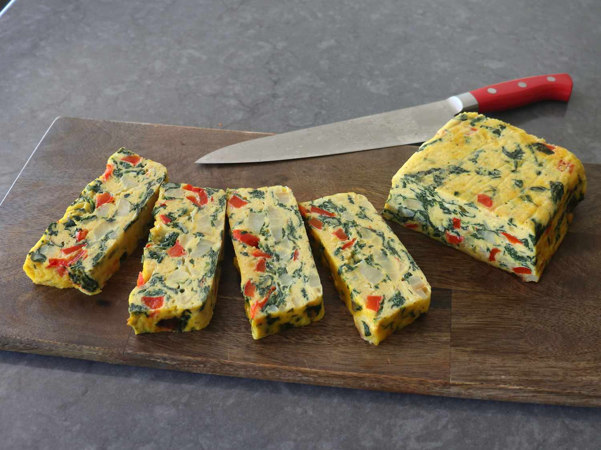

Loaf Pan Frittata
Description

This loaf pan frittata is a great alternative method for making frittata, plus it's easier. Use any type of greens you like, bell peppers, and potatoes, or whatever vegetables you have on hand. My favorite way to serve it is on plain toast with a garlic aioli or lemon mayonnaise, and a small green salad on the side.
Ingredients
- 1/4 cup olive oil, divided
- 10 ounces baby spinach
- 12 large eggs
- 1 1/2 teaspoons kosher salt
- 1/2 teaspoon freshly ground black pepper
- 1 pinch cayenne pepper
- 1/2 cup sliced onion or shallot
- 1 large red bell pepper, seeded and diced
- 1 1/2 cups sliced cooked potatoes
- 4 ounces mild Cheddar or fontina cheese, shredded
Steps
- Preheat the oven to 350 degrees F (180 degrees C). Grease a 9x5-inch loaf pan and line with parchment.
- Add 1 tablespoon olive oil to a large skillet over medium-high heat. Add spinach and cook, stirring, until just barely wilted, 1 to 2 minutes. Place a strainer over a bowl; transfer in spinach and let cool. When cool enough to handle, squeeze out all excess water, and set aside.
- Crack eggs into a bowl; whisk with salt, black pepper, and cayenne until egg whites disappear. Refrigerate until needed.
- Add remaining olive oil to the same skillet and place over medium-high heat. Add shallots, red pepper, and a big pinch of salt; cook, stirring, until peppers are nearly tender, about 4 minutes. Reduce heat to medium if vegetables are browning before getting tender.
- Add potatoes, season to taste with salt, and, and cook, stirring, until potatoes are heated through and vegetables are tender, a few minutes more.
- Add spinach and egg mixture, and cook, stirring, until a very soft scramble is formed. Turn off the heat and stir in cheese. Pour into the prepared pan. Tap the pan on the counter a few times to settle the contents down.
- Bake in the preheated oven until a bamboo skewer inserted near the center comes out clean, 20 to 25 minutes. Cooking time will vary depending on how much or which vegetables you use in the frittata.
- Let frittata cool for about 10 minutes, then remove from the pan. Frittata can be served hot, warm, at room temperature, or cold.
Home